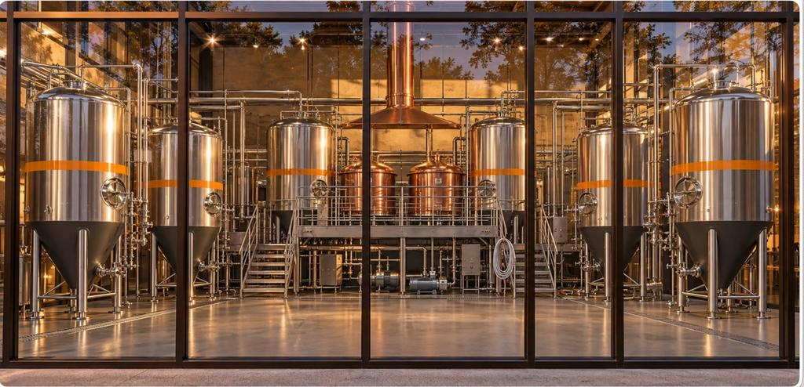

Hefeweizen
Designed to show banana and clove in balance. The beer every other NASHA beer has to earn its place beside.
Bavarian-style wheat beerNot brewed yet
Designed to pair with Chicken 65 Totopos, Hefe-Brined Wings, Paneer Tikka Taco
Beer · Briefs for a brewer
Beer designed to meet the food: crisp enough to cool the heat, round enough to hold a char. Nothing has been brewed. Each beer is a brief for a head brewer to critique, change, or reject.
NASHA is in development. There is no brewery, no restaurant, no truck and no menu for sale yet. Images are concept visualizations and illustrations, not photographs of NASHA. Alcohol is for adults of legal drinking age. Any future beer sales depend on licences we have not yet obtained.
Concept illustration · colour follows the style reference, not a brewed beer
Gate beers
Designed to show banana and clove in balance. The beer every other NASHA beer has to earn its place beside.
Bavarian-style wheat beerNot brewed yet
Designed to pair with Chicken 65 Totopos, Hefe-Brined Wings, Paneer Tikka Taco
A crisp, clean lager designed to be the cold partner for chile heat.
Pale lagerNot brewed yet
Designed to pair with Chicken 65 Totopos, Chaat Elote, Gobi Taco
Toasted bread-crust malt, designed to meet char and braise.
Vienna-style lagerNot brewed yet
Designed to pair with Dal-Frijol Dip, Tandoori Lamb Taco, Goat Birria, Sealed-Pot Braise
Beer explorer
A crisp, clean lager designed to be the cold partner for chile heat.
Pale lagerYear-roundNot brewed yet
A dry, crisp pilsner designed to cut through fried and spicy food.
German-style pilsnerYear-roundNot brewed yet
Designed to show banana and clove in balance. The beer every other NASHA beer has to earn its place beside.
Bavarian-style wheat beerYear-roundNot brewed yet
A soft, citrusy wheat beer designed for warm weather and seafood.
Belgian-style wheat beerSpring and summerNot brewed yet
Banana and clove over toast and a hint of chocolate, designed for cooler months.
Dark wheat beerAutumn and winterNot brewed yet
Toasted bread-crust malt, designed to meet char and braise.
Vienna-style lagerYear-roundNot brewed yet
A pilot idea: wheat lager with coriander seed and perhaps toasted sesame, each only if it improves aroma without hurting the beer.
Wheat lager (research and development)Year-round (if it passes)Not brewed yet
Working name. May change. Style and colour are not settled, so the glass is shown as a faint outline.
A pilot idea: a lager with a touch of sour fruit and sea salt. It launches only if a pilot proves it.
Coastal lager (pilot idea)Summer (if it passes)Not brewed yet
Working name. May change. Style and colour are not settled, so the glass is shown as a faint outline.
A winter pilot idea: dark wheat beer with black pepper and cacao. It needs foam, stability and regulatory checks first.
Dark wheat with pepper (pilot idea)Winter (if it passes)Not brewed yet
Working name. May change. Style and colour are not settled, so the glass is shown as a faint outline.
No ABV, IBU, recipe, award or availability is stated because none exists. Names marked “working name” may change.
Pairings
Proposed pairingNot sensory-testedNot brewed yet
Proposed pairingNot sensory-testedNot brewed yet
Proposed pairingNot sensory-testedNot brewed yet
Proposed pairingNot sensory-testedNot brewed yet
The Two-Pour ritual
A proposed way to eat: the same dish after two different pours. It is a design idea to test in tastings.
A cold, clean Mexican-Style Lager arrives first, as designed.
Chicken 65 Totopos, a designed Chennai-style bar snack with masa chips.
Then a Hefeweizen alongside the same dish, as designed.
How the experience might change: the same bite, tasted after two different beers. That is a hypothesis for a tasting, not a result. No guest has tried it, and no beer has been brewed.
Brewery vision
The imagined brewhouse sits behind glass so guests can see the work. The equipment in this picture is illustrative: the vessel size and count are an open decision and nothing here fixes them.

Honest status
No beer exists. There is no brewer on the team, no recipe and no licence. The first beers, if any, would likely be made with a partner brewery under rules we are still learning. Follow the path in Labs.